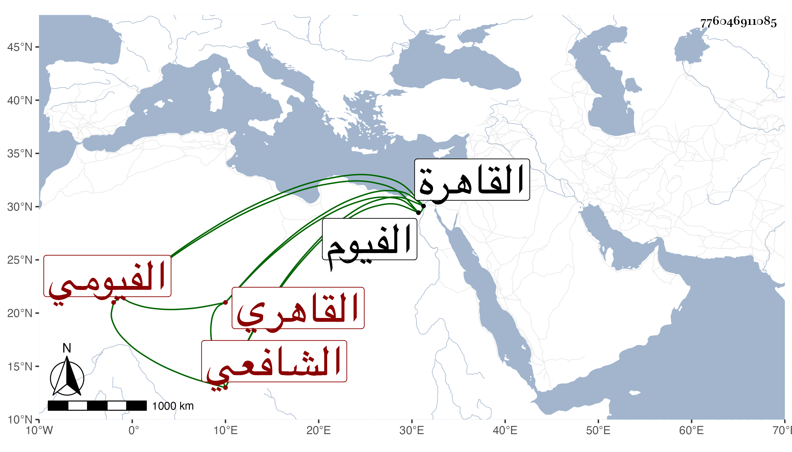

0902Sakhawi.DawLamic.ITO20230111-ara1.EIS1600.776046911085
Biography ID: 776046911085
أحمد بن عبد النور بن أحمد البهاء أبو الفتح الفيومي القاهري الشافعي والد الصدر محمد الآتي وهو بكنيته أشهر . كان أحد خطباء الفيوم ثم قدم القاهرة فقطنها وأخذ عن علمائها وكتب بخطه جملة ومن ذلك كما وقفت عليه أوسط شروح المنهاج لابن الملقن وأرخه في سنة ثلاث وسبعين وناب في القضاء عن الصدر المناوي وأنجب أولادا . مات في وثمانمائة رحمه الله .
